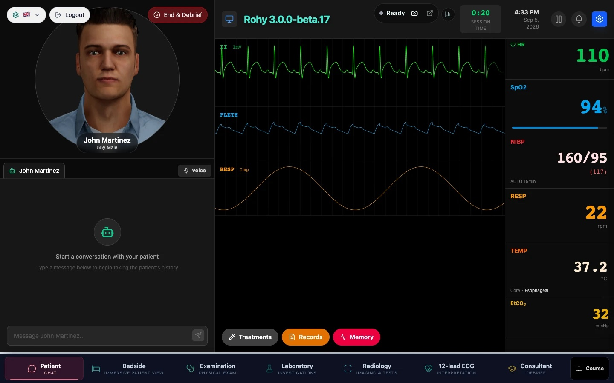

Each task has its own room inside one running case.
Rohy organises the encounter into peer rooms. The core rooms are Patient, Examination, Laboratory, Radiology and Consultant. Plugin rooms appear in the navigator when the case enables them: 3D Room, 12-lead ECG, Pathology and PACS. The case keeps running while the learner moves between them. Laboratory results become ready while the learner is talking to the patient, a consultant arrives while imaging is being reviewed, and treatment effects continue in the background. Clinical practice requires attention distributed across several sources of information and several tasks, and the room model preserves how each learner distributes it.
The interview, the monitor and the treatments.
Every case starts here. The patient answers by text or by voice through an animated 3D avatar that lip-syncs the spoken reply, blinks and holds eye contact. The patient speaks from the case's own history and personality, in lay language, and stays within what a patient at this stage of the encounter would know. In voice mode a cinema-style subtitle renders the reply as the model streams it.
- The live monitor. Heart rate, SpO₂, non-invasive blood pressure, respiratory rate, temperature and end-tidal CO₂, with ECG, plethysmograph and respiration waveforms synthesised in real time.
- Alarms. A threshold crossing latches a banner with Snooze and Acknowledge. Both are timestamped, and the physiology continues until it is treated.
- Treatments, Records and Memory. The Treatments panel orders and then administers medications, fluids, oxygen and manoeuvres. The Records drawer holds the chart, medication history, allergies and social history. Memory holds what the patient has already been told.
- The care team. The bedside nurse, the family member and the paged consultant join the same transcript, each with its own knowledge scope.
- End & Debrief. The action that stops the timeline, locks orders, exams and chat, and opens the debrief.

The same patient, seen from the bedside.
Rohy 3 adds a 3D bedside room as the second room in the navigator. The case's patient lies in bed with the live monitor on the wall, a camera wheel that changes the view, and arrows that step around the bed. The room is drawn over the Patient room, so the monitor keeps running and the conversation is the same one: a question asked at the bedside appears in the chat transcript, and a reply typed in the chat is captioned here.
- Talk out loud. Tap the microphone or press Space to speak to the patient. The reply is spoken when a voice is configured and always captioned.
- Examine at the bedside. Clicking a region of the body opens the examination wheel. The finding opens the same chart, with the same auscultation sounds, as the Examination room, and counts exactly like an exam performed there.
- The chart and the IV pole on the bedside table open the Records and Treatments drawers.
- Shared physiology. The bedside monitor and the Patient room monitor read from the same session, so a treatment given here moves the vitals everywhere.
![The 3D Room during the Acute Chest Pain – STEMI case. A patient in a tweed jacket lies in a hospital bed in a rendered ward with an IV pole and a bedside table. A camera wheel labelled 'View: Patient' sits at the left, a Move arrow pad at the top, and a live monitor panel at the top right shows sinus tachycardia on lead II, heart rate 110, SpO2 94, respiratory rate 22, NIBP 158/94 and temperature 37.2 with the status 'Stabilizing — physiology is responding'. A caption reads: 'Doctor… my chest. It is like something heavy is sitting on it. It started about three quarters of an hour ago and it will not let go. My arm aches, my jaw aches. I am soaked through. Please… my father died of this.' Body map, Treatments and Records buttons sit at the bottom left, 'Tap to talk' at the bottom centre, and the room navigator shows 3D Room selected.](assets/room-3d.jpg)
Physical examination as a structured sequence.
The learner selects an anatomical region on a body map, then an examination technique. Each combination reveals the finding the case author prepared for it, or the normal description when none was written. The system records which findings were available and what the learner chose to examine, so the examination log is a trace of information-seeking behaviour that the debrief can use to discuss both observed findings and clinically relevant omissions.
- 67 named regions on an anatomically accurate silhouette with invisible polygon hit areas. Anterior, posterior and lateral views, with body maps differentiated by patient characteristics.
- Four techniques per region: inspection, palpation, percussion and auscultation. Neurological examination adds cranial nerves, motor, sensory, reflexes and coordination as discrete examinables, and special tests are available where the case defines them.
- Auscultation with a point picker. Aortic, pulmonic, Erb's point, tricuspid and mitral areas and the lung fields, each with audio playback where the case provides it.
- Examined and abnormal regions are marked on the figure. The examination log at the bottom is the learner's own record and is what the debriefing discussant receives.
- Idempotent recording keyed on session, region and technique, so a retry produces one finding. Findings can be exported, and free-text notes travel with the session.
![The Examination room. An anterior male body silhouette on the left with the chest region highlighted and a legend for hover, normal, abnormal and selected. On the right, a technique chooser with Inspection, Palpation (marked Done), Percussion and Auscultation (selected). Below it, 'Auscultation – Chest' with a cardiac point picker showing Tricuspid selected at the 4th intercostal space, left sternal border, a clinical narrative reading 'Vesicular breath sounds are heard throughout all lung zones with no added sounds…', an audio player for tricuspid sounds, and clickable points for Aortic, Pulmonic, Erb's Point, Tricuspid, Mitral (Apex), left and right lung and bases. An examination log lists Abdomen – Inspection (abnormal), Chest – Palpation and Chest – Auscultation with timestamps.](assets/physical-exam.jpg)
Deciding what to order is part of the diagnostic work.
The Laboratory presents a complete catalogue, so the learner decides what to request. The catalogue holds over 200 tests in more than 30 groups, among them haematology, metabolic and renal testing, liver function, coagulation, thyroid and other endocrine investigations, blood gases, cardiac markers, inflammatory markers, iron studies, lipids, diabetes, urinalysis, toxicology, drug levels, body fluids, cerebrospinal fluid and autoimmune markers. Reference ranges vary by sex where that is clinically appropriate.
- Three columns. The searchable catalogue on the left, the rendered report in the centre, the worklist on the right.
- Pending, ready, viewed. Each test carries a turnaround inside a one-to-five-minute band. The worklist moves an order from pending to ready on its own, a count badge appears on the room button, and opening the report marks it viewed. Reports stay available for the rest of the session.
- A hospital-style report. Patient, accession number, report date and status, then result, unit, reference range and a high, low or normal flag the learner can toggle off.
- Panels for common workups such as acute myocardial infarction, diabetic ketoacidosis, sepsis, stroke and pulmonary embolism, and an administrator bulk-import for additional tests.
The delay approximates a defining feature of clinical environments: decisions are often made while the evidence is still incomplete.
![The Laboratory room during the Acute Chest Pain – STEMI case. Left: a catalogue of 201 tests with a search box and group filter, listing bilirubin, AST, ALT, alkaline phosphatase, GGT and LDH, each with a 3-minute turnaround. Centre: a laboratory report for John Martinez, accession LAB-000056, status Final, showing ALT (SGPT) 30.00 U/L against a reference range of 7–56 with a Normal flag, plus Show Ranges and Show Flags toggles and a legend for high, low and normal. Right: a worklist of 12 with AST and alkaline phosphatase under Ready and ten tests under Viewed.](assets/laboratory.jpg)
Imaging is requested, awaited and then read.
Imaging follows the same lifecycle as the laboratory. The catalogue holds 74 orderable studies, 58 imaging and 16 diagnostic, across nine modalities: radiography, computed tomography, magnetic resonance imaging, ultrasound, echocardiography, nuclear medicine, fluoroscopy, mammography and DEXA. Orders move from pending to ready to viewed, and reports land in the worklist on their own.
- Ready, pending and viewed counters summarise the worklist; each pending study shows its remaining time.
- Per-case reports authored by the educator, with image and video upload for case-attached findings.
- Reading happens in two plugin rooms. DICOM studies open in the PACS room and electrocardiograms in the 12-lead ECG room, both described below. Plugin rooms are added through the plugin capability surface and appear in the navigator when the case enables them.
![The Radiology and diagnostics room. Left: a catalogue of 74 studies filtered as All 74, Imaging 58, Diagnostics 16, listing ultrasound aorta and cardiac studies such as stress echocardiogram, dobutamine stress echo, cardiac MRI, cardiac MRI stress perfusion, coronary CT angiography and CT coronary calcium score, each with a turnaround. Centre: counters reading Ready 0, Pending 4, Viewed 0, and a notice that four studies are pending and reports land automatically. Right: a pending worklist with cardiac MRI, stress echocardiogram, FAST exam and ultrasound aorta showing two to five minutes remaining. A toast confirms 'Ordered 2 study(s)'.](assets/radiology-worklist.jpg)
The 12-lead ECG workstation
Electrocardiography gets a dedicated workstation so that interpretation is an active measurement task. Calibrated paper with selectable gain and sweep speed, diagnostic and monitor filters with 50 and 60 Hz notch options, and measurement calipers for interval, amplitude and rate. Click two points and the interval is measured and kept in a list for review. A chest-electrode map and a frontal-plane axis diagram show which wall each lead represents. Because the learner's measurements are retained, the debrief can discuss how a tracing was inspected and measured.
![ECGyon, the 12-lead ECG workstation. Controls for gain (5, 10, 20 mm/mV), speed (12.5, 25, 50 mm/s), filter (raw, diagnostic, monitor, 50 Hz, 60 Hz), caliper mode (interval, amplitude, rate) and paper grid. A twelve-lead tracing on calibrated pink paper with leads I, II, III, aVR, aVL, aVF and V1 to V6 plus a lead II rhythm strip, and an active caliper reading Δ 202 ms, 0.13 mV. On the right, a chest-electrode diagram, a frontal-plane hexaxial diagram with lead II highlighted and labelled 'left leg minus right arm, +60°, inferior wall', and a Measure tab listing six retained measurements with a classification dropdown and Discard button for each.](assets/ecg-workstation.jpg)
Whole-slide imaging as a measurable visual environment.
Digital pathology follows the same logic as the DICOM viewer. The learner navigates a whole-slide image with a magnification ladder, reads scale in micrometres, and annotates with tools that measure. Brightness, contrast, gamma and saturation alter the visualisation; measurements come from scanner metadata and stay tied to it.
- Whole-slide navigation with a magnification ladder from 1× to 40×, a scale bar, the field area, and slide coordinates.
- Annotation tools that measure. Arrows, rectangles, ellipses, polygons, freehand paths, points and grids; an ellipse reports its area in square micrometres, and annotations can be classified and summarised by class.
- Display adjustments are labelled as such, with a single control to reset to the scanned image.
- A slide library and a report field, with the slide's events counted for the session log.
![The Pathology room showing an H&E core biopsy of the left breast at 11× interpolated magnification. A toolbar offers pan, select, ruler, arrow, rectangle, ellipse, polygon, pen, curve, point and grid tools, a classification tag, a magnification ladder from 1× to 40×, and view controls. Overlays read '100 µm' scale bar, '536,000 µm² field' and slide coordinates x 66,317, y 48,227. An ellipse annotation is labelled 32,024 µm². A display panel with Brightness 1.16, Contrast 1.00, Gamma 1.00 and Saturation 1.00 sliders carries the note 'Display only. These change what you see, never the measurements — those come from scanner metadata', with a 'Reset to the scanned image' button. A slide navigator thumbnail and an 'Area by class' summary sit at the bottom right.](assets/pathology-slide.jpg)
The DICOM reading room.
DICOM studies open in the PACS room: multi-series studies, a thumbnail rail, side-by-side viewports, and window and level controls that behave like a workstation's. Width and level are the radiographic parameters, the transfer function offers sigmoid as well as linear, and gamma is available. Edge enhancement is labelled display only. Visual enhancement changes appearance while the underlying values are preserved, which reinforces the difference between changing the visualisation of data and changing the data.
![The DICOM reading room. A study list on the left with MRI studies such as MRI Chest (3 series, 210 images), MRI Brain, cervical spine, knee, lumbar spine, pelvis and shoulder. Two coronal chest MRI viewports side by side, T1 at window 490 level 245 and T2 at window 614 level 307, each labelled with orientation markers, image index and zoom. A series rail with three thumbnails. A right-hand panel with Width and Level sliders, Linear and Sigmoid transfer-function buttons, a Gamma control, an Edge enhancement slider labelled 'display only — measurements are unaffected', an 'Interpolate when zoomed out' checkbox, a 'Reset to as acquired' button, and a Findings report field.](assets/radiology-pacs.jpg)
A debrief grounded in the learner's actual encounter.
The Consultant room has two roles. During a live case, visiting it is navigation: the timeline continues and the learner can return. End & Debrief is a separate action that stops the timeline, locks orders, examinations and chat, and opens the reflective phase with the transcript, the learner's notes, a case summary and an AI discussant.
- A separate persona. The discussant is a senior clinician-educator with its own voice, avatar and language model, configured independently of the patient, with per-case overrides.
- The encounter record. The discussant receives every examination, order and treatment in elapsed time, so it can refer to what was done and what was omitted and the learner is freed from reconstructing the case from memory.
- Socratic method. The debrief probes reasoning, scaffolds answers and asks before telling: why an investigation was ordered, why treatment was delayed, why an examination was skipped, why attention shifted at a particular moment.
- Silent opening turn. The opening prompt is sent as a silent model call, so meta-prompts stay out of the learner-utterance audit trail.
- Same multimodal infrastructure. Text or voice, lipsync and subtitle overlay. Structured feedback is captured into session notes for cohort export.
![The Case Debrief screen for Acute Chest Pain – STEMI. Left: the patient card for John Martinez, 55, male, with a 'View full case summary' button. Right: the Default Discussant avatar, a woman with dark hair, above a subtitle reading 'so what do you think of my performance today with the case', a red listening button labelled 'Listening — talk now', and a 'Type instead' option. The header shows a Back to patient button, the Oyon status pill reading Happy 49%, Notes, and Transcript with 5 entries. The Consultant room is selected in the navigator.](assets/debrief.jpg)
Moving between rooms keeps the session running.
A navigation bar runs along the bottom of every in-session surface. The current room is highlighted with its own accent colour. Rooms can be visited in any order, as many times as the learner likes.
- Switching rooms keeps everything. The case, the timeline, the findings, the orders and the transcript persist across room changes.
- The results badge. When a laboratory or imaging result becomes ready and has yet to be opened, a count badge appears on the Laboratory or Radiology button. It refreshes roughly every ten seconds and clears once the result is opened.
- Refresh-safe. Reloading the page or reopening the tab brings the learner back to the same room, the same case and the same progress. A session ends only through End & Debrief, loading a different case, or an instructor ending it.
- Room-stamped events. Every action carries the room it happened in, so analytics can separate behaviour by setting and gaze can be mapped per screen.
- Small distinctions with large meaning. Ordering is distinct from viewing, viewing from understanding, acknowledging from treating, navigating from ending, asking from examining, and a treatment order from an administered intervention. These boundaries make the learner's path interpretable.
The rooms feed one event stream.
Every action across every room lands in one verb-coded, room-stamped, vital-enriched sequence. The overview page describes the care team, the physiology engine, the analytics, Oyon, case authoring and installation.
Every room has a written guide.
The documentation site ships with the platform and is reachable from inside the application through the Help & Support drawer, which lists them filtered by role. These are the learner-facing pages for the rooms above.